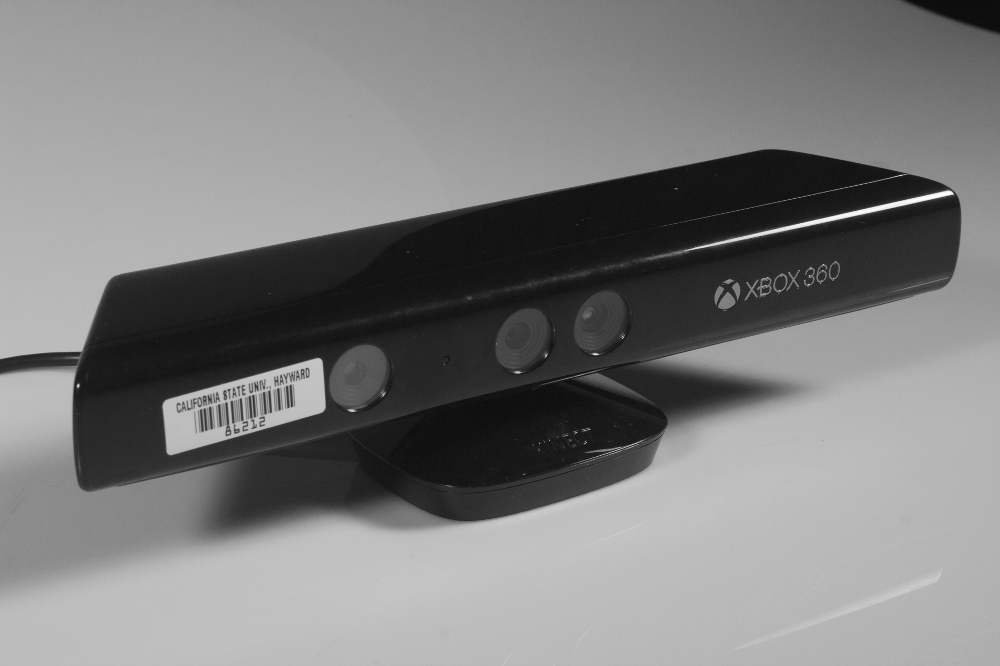

Using MadMapper software, I projection mapped onto the surface of this skylight. I cleaned and coated the half sphere with a matte white spraypaint to give my visuals the opportunity to display at full retinal capacity.

In past projects, I've used the Makey Makey as a vessel for interaction between the my art piece and the user.

Using the Kinect in conjunction with the software sketchbook, Processing allowed me to combine the kinetic energy of the user with the computational process of code. This project was a result of the organic-the human, coming into contact with something more unnatural-computers.

info@courtnmotion.com
courtnmotion